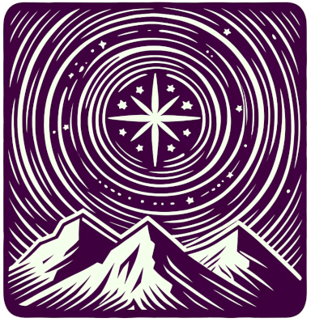

Polaris
{kind=link}
Polaris is a python package that provides an automated system to set up test cases or analysis tasks for several components of the Exascale Energy Earth System Model (E3SM. The development version of Polaris will be kept closely synchronized with the development repositories for the components it supports. Release versions will be compatible with specific tags of the MPAS components.
Many Polaris tasks are idealized, and are used for things like performing convergence tests or regression tests on particular parts of the model code. Many other Polaris tasks, such as those under the ocean-global-ocean and landice-greenland test groups, are “realistic” in the sense that they use data sets from observations to create create global and regional meshes, initial conditions, and boundary conditions.
Polaris will be the tool used to create new land-ice and ocean meshes and initial conditions for future versions of E3SM.
Note
Polaris does not provide the tools for creating many of the files needed for full E3SM coupling, a process that requires expert help from the E3SM development team.
The polaris python package defines the tasks and analysis tasks along
with the commands to list and set up both tasks and suites (groups
of tasks or analysis tasks). Polaris currently supports landice
and ocean components. Nearly all tasks include calls that launch one
of these E3SM components, built in “standalone” (uncoupled) mode. These runs
are configured with config files (e.g. YAML or namelist files) and one of the
benefits of using Polaris over attempting to run one of the components directly
is that Polaris begins with default values for all these config options
for a given version of the component, modifying only those options where the
default is not appropriate. In this way, Polaris requires little alteration
as the model components themselves evolves and new functionality is added.
Polaris makes extensive use of the Jigsaw and Jigsaw-Python tools to make all but the simplest meshes for Polaris tasks. These tools, without which Polaris’ mesh generation capabilities would not be possible, are developed primarily by Darren Engwirda.
User's guide
Developer's guide
- Quick Start for Developers
- Unix Shell
- Set up a polaris repository: for beginners
- polaris conda environment, spack environment, compilers and system modules
- Creating/updating only the polaris environment
- Building E3SM components
- Running polaris from the repo
- Code style for polaris
- Set up a polaris repository with worktrees: for advanced users
- Overview
- Command-line interface
- Organization of Tasks
- Ocean component
- SeaIce component
- Framework
- Machines
- Troubleshooting
- Documentation
- Building the Documentation
- Deploying a new spack environment
- API reference
- Design Documents
Glossary
Compass
The compass package is the predecessor of Polaris. Documentation for
compass can be found at:
https://mpas-dev.github.io/compass/latest/
the code can be found at: